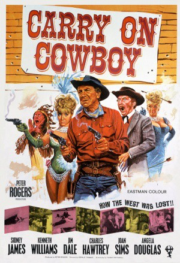
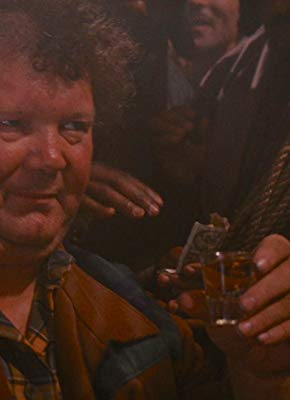
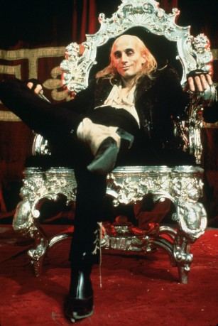

#11784 Carry On 11 - Ist ja irre - Der dreiste Cowboy
Alternativ: Carry On Cowboy (Englischer Titel)
 
 IMDB-Wertung: 6.3 / 10
IMDB-Wertung: 6.3 / 10  Metascore: 0
Metascore: 0 
Weil in Washington die Marshalls knapp sind, greift der zuständige Beamte zu, als sich ein Kanalisationsingenieur mit Vornamen Marshall bei ihm meldet. Marshall wird nach Stodge City geschickt, wo er unerwartet zur Säuberung nicht der Kanalisation, sondern des von Rumpo Kid und seinen Kumpanen terrorisierten Städtchens eingesetzt wird.
Jahr: 1965
Dauer: 90 Minuten
FSK: 12
Land: England Studio: Anglo AmalgamatedTonspuren:
Untertitel:
Auflösung: SD (608x368) Größe: 700 MB
Genre: Komödie, Western
Regisseur: Gerald Thomas
Drehbuch: Talbot Rothwell
Soundtrack: Eric Rogers
Darsteller:
 Sidney James als Johnny Finger, the Rumpo Kid
Sidney James als Johnny Finger, the Rumpo Kid Kenneth Williams als Judge Burke
Kenneth Williams als Judge Burke Jim Dale als Marshal P. Knutt
Jim Dale als Marshal P. Knutt Charles Hawtrey als Chief Big Heap
Charles Hawtrey als Chief Big Heap Joan Sims als Belle Armitage
Joan Sims als Belle Armitage Angela Douglas als Annie Oakley
Angela Douglas als Annie Oakley Bernard Bresslaw als Little Heap
Bernard Bresslaw als Little Heap Peter Butterworth als Doc
Peter Butterworth als Doc Percy Herbert als Charlie, the Bartender
Percy Herbert als Charlie, the Bartender- Jon Pertwee als Sheriff Albert Earp
- Sydney Bromley als Sam Houston
- Edina Ronay als Dolores
 Peter Gilmore als Henchman Curly
Peter Gilmore als Henchman Curly- Alan Gifford als Commissioner
 Margaret Nolan als Miss Jones
Margaret Nolan als Miss Jones- Larry Cross als Perkins
- Andrea Allan als Minnie (uncredited)
- David Birks als Rider (uncredited)
 Maxwell Craig als Saloon Patron (uncredited)
Maxwell Craig als Saloon Patron (uncredited)- Mick Dillon als Rider (uncredited)
-  Patrick Durkin als Man (uncredited)
 Hal Galili als Cowhand (uncredited)
Hal Galili als Cowhand (uncredited)- Norman Mann als Rider (uncredited)
- Bryan Mosley als Rider (uncredited)
-  Richard O'Brien als Rider (uncredited)
- Tony Robinson als Rider (uncredited)
 Reg Thomason als Saloon Patron (uncredited)
Reg Thomason als Saloon Patron (uncredited) Fred Wood als Townsman (uncredited)
Fred Wood als Townsman (uncredited)- Lionel Murton als Clerk
- Davy Kaye als Josh the Undertaker
- Brian Rawlinson als Burt, Stagecoach Guard
- Michael Nightingale als Bank Manager
- Simon Cain als Short
- Sally Douglas als Kitikata
- Cal McCord als Young Ranchhand
- Gary Colleano als Henchman Slim
- Arthur Lovegrove als Old Ranchhand
- Tom Clegg als Blacksmith
- Brian Coburn als Trapper
- Ballet Montparnasse als Dancing Girls
- Jack Arrow als Saloon Patron (uncredited)
- David Ashton als Rider (uncredited)
- Tommy Atkins als Rider (uncredited)
- Pat Baker als Rider (uncredited)
- Gerald Barnes als Rider (uncredited)
- Bernard Barnsley als Rider (uncredited)
- Douglas Bates als Rider (uncredited)
- Jack 'Kid' Berg als Rider (uncredited)
- Gloria Best als Bridget (uncredited)
- Brian Bowes als Rider (uncredited)
Datei: X:\7+mehr(A-Z)\Carry On\Carry On 11 - Ist ja irre - Der dreiste Cowboy (1965, FSK12, 608x368).avi seit 20.09.2019
Festplatte: HD Collection-7+mehr(A-Z)+Person
 Es gibt insgesamt 33 Filme in der Gruppe '7+mehr(A-Z)\Carry On'
Es gibt insgesamt 33 Filme in der Gruppe '7+mehr(A-Z)\Carry On'